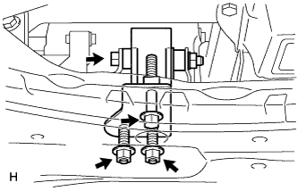

Installation of engine mounting insulator RR (1NZ-FE (4WD)) |
| 1. Engine mounting insulator RR installation |
|  |
Operate the mission jack and attach the engine mounting insulator RR with two bolts and two nuts.
| 2. Proposhaft ASSY installation |
Remove the SST from the extension housing.
Insert propellashaft ASSY into extension housing.
 |
Combine the combined mark of the propeller shaft asshas and the interimide shaft asser.
Attach the propeller shaft ASSY with 4 bolts, washer and four nuts.
| 3. Exhaust pipe ASSY CTR installation |
Insert an exhaust center pipe ASSY into the exhaust pipe ASSY FR via a new gasket.
Install the exhaust center pipe ASSY with two exhaust pipe support.
 |
The new clamp and bolt are the positions of the clamp and tighten the bolt.